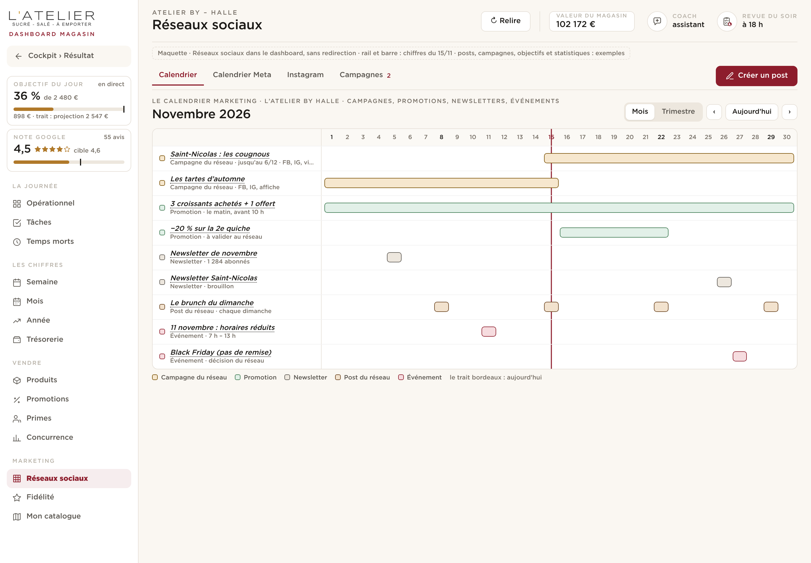
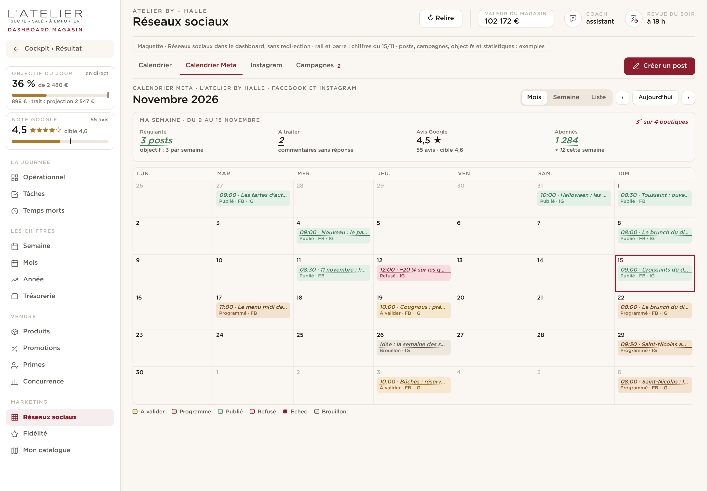
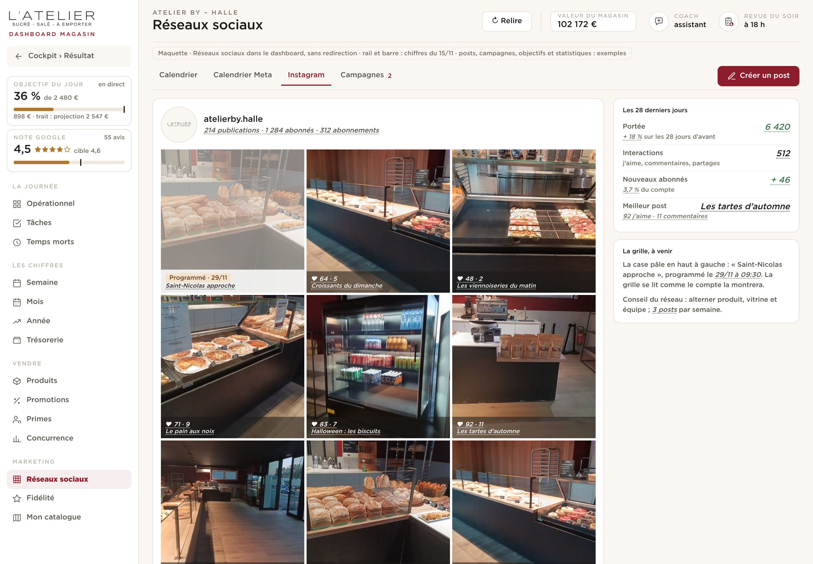
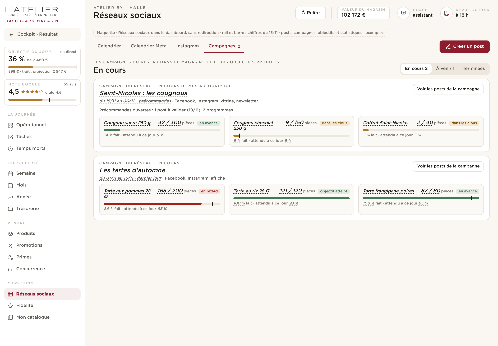
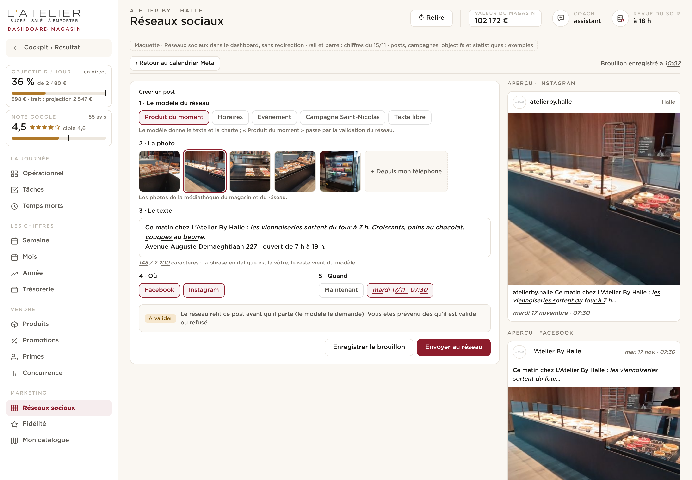

Calendrierle calendrier marketing du magasin : campagnes, promotions, newsletters, événements
Calendrier Metales posts Facebook et Instagram du mois, « Ma semaine »
Instagramla grille du compte, ce qui est programmé, les 28 derniers jours
Campagnesles campagnes en cours et leurs objectifs produits, à venir, terminées
Créer un postle modèle, la photo, le texte, où et quand ; l’aperçu ; la validation du réseau